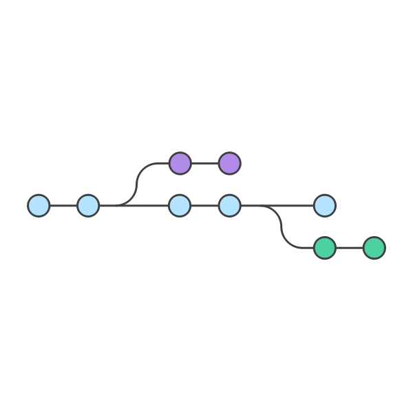

Hi!👋 I'm Amy, a 4th year Data Science and Public Health major at UC Berkeley.
Thanks for stopping by! Scroll below to see some of my work.
About Me
Hi there! My name is Amy (she/they), and I am a Data Science
and Public Health major at UC Berkeley graduating in December 2022. I am passionate about
the intersection of technology and social impact.
Last summer, I interned at Grainite as a Software Engineering Intern focused on building
back-end database tools in C++. I greatly enjoy the intellectual challenge of coding and
the process of building a project from the ground up. Additionally, I am also a Health Worker
at the Berkeley Student Cooperative, where I create health education posters and host monthly
events for residents.
Outside of work, you can find me hiking and camping in the beautiful outdoors of Northern California,
climbing at Berkeley Ironworks, or playing board games with my friends.
End-to-end Encrypted File-Sharing System
An end-to-end secure file-sharing system implemented in Go that guarantees confidentiality and integrity even in an untrusted database by incorporating RSA public-key encryption and signatures, AES encryption and HMAC.

Gitlet Version Control System
A version control system implemented in Java that can track and commit file changes, revert to previous versions, create and merge branches, and support remote usage. Supports Git commands such as init, add, commit, branch, checkout, merge, fetch, and pull.
Spam Email Classifier
A spam email classifier with 90% accuracy implemented in Python, using sklearn libraries to process text data and fit logistical regression models.